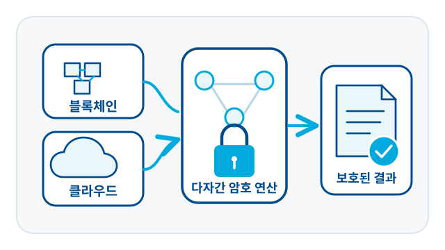
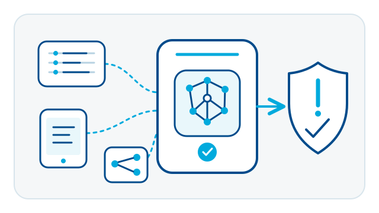
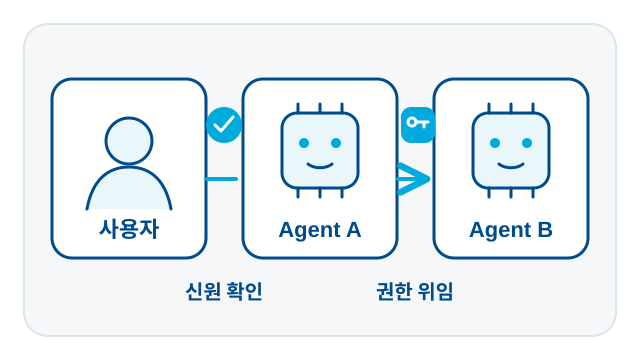

프라이버시 보호 메커니즘 및 프로토콜 설계
- 블록체인·클라우드 등 다양한 환경에서 프라이버시를 보호하는 메커니즘을 설계합니다.
- 다자간 연산(MPC) 등 암호학 기법을 활용해 데이터 활용 과정의 프라이버시를 보호합니다.




KW Cho, BG Jeong, SU Shin · IEICE Transactions on Information and Systems, E104-D(11)
KW Cho, MH Jeon, SU Shin · Journal of Digital Convergence, 19(8)
S Noh, SU Shin, KH Rhee · Security and Communication Networks
BG Jeong, TY Youn, NS Jho, SU Shin · Sensors, 20(11)
JS Park, TY Youn, HB Kim, KH Rhee, SU Shin · Sensors, 18(10)